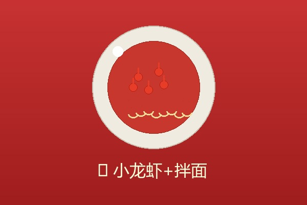
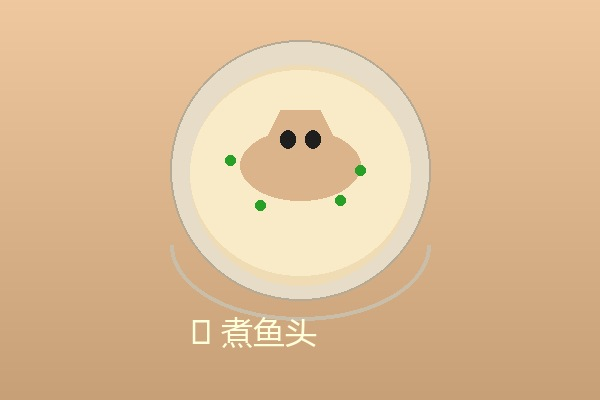
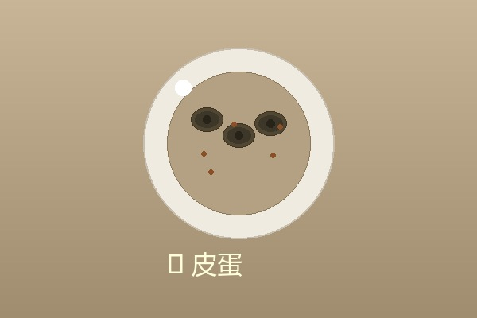
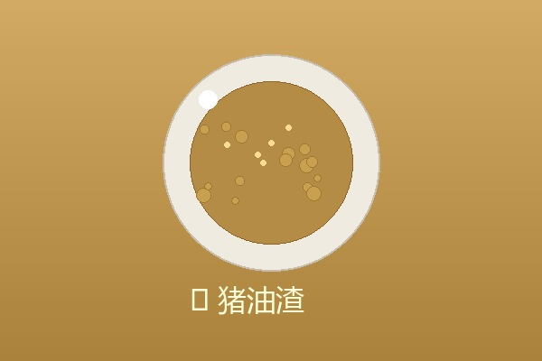
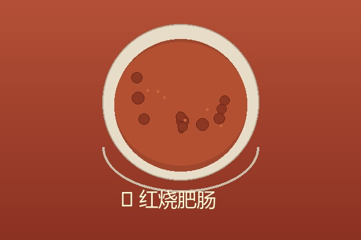

三亚崖州 → 江西九江 · 两千公里的奔赴
整理行装，告别研学的伙伴们，准备踏上归途
乘坐 S6735 次列车，从崖州湾站出发前往三亚凤凰机场站
从三亚凤凰机场起飞，跨越山河，飞向故乡的方向
姐夫、姐姐、外甥女 在昌北机场等候接机！一家人团聚
回到江西省九江市濂溪区新港镇荷塘村农民公寓——到家了！
总行程约 2000 公里 · 跨越琼州海峡与万里山河
离家在外最想念的就是家里的味道

夏天必备！麻辣鲜香的小龙虾，配上劲道的拌面，一口下去全是满足！
最想念 No.1
鲜嫩肥美的鱼头，炖出奶白色的浓汤，鲜掉眉毛！
老爸拿手菜
凉拌皮蛋加点醋和姜末，清爽开胃，夏日必备凉菜！
开胃小菜
焦香酥脆的猪油渣，撒上椒盐，越嚼越香，童年的味道！
酥脆记忆
软糯Q弹的红烧肥肠，酱香浓郁，下饭神器！
下饭神器每个人的准备，都是为了少爷平安归来
妹妹已经把少爷的房间打扫得一尘不染，床铺换上干净被褥，窗户打开通风，等哥哥回家好好休息！
老爸天刚亮就去菜市场采购最新鲜的食材，小龙虾、鱼头、肥肠……准备大显身手，做一桌少爷最爱的菜！
奶奶站在门口张望，等着她的大孙子回来，还有姐夫、姐姐和小外甥女，一家人团团圆圆！
姐夫开车带着姐姐和外甥女专程到昌北机场接机！外甥女说想舅舅了，要第一个冲上去抱抱！
少爷 + 老爸 + 奶奶 + 妹妹 + 姐夫 + 姐姐 + 外甥女
一 家 人 齐 齐 整 整 ， 就 是 最 大 的 幸 福